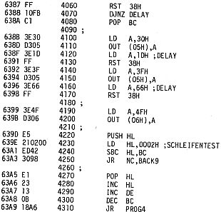

80-Bus Journal |
März 1983 · Ausgabe 3 |

Kurzbeschreibung EPROM 2564/2764
Der TMS 2564 wird seit Anfang 80 gefertigt, während der 2764 seit Mitte 81 angeboten wird.
Beide sind (leider) nicht voll pinkompatibel und erfordern unterschiedliche Programmierbedingungen.
Hinsichtlich Zugriffszeiten, Temp. grenzdaten u.s.w. bestehen die gleichen Abstufungen, wie von den EPROM-Typen 2732/2716 her bekannt.
Die nachfolgenden Zeitdiagramme beziehen sich alle auf EPROM’s mit einer Zugriffszeit von 450 ns.
Die Programmierspannung des 2564 beträgt 25V, beim 2764 sind es 21V.
Die Prog. Kontrolle des 2564 erfolgt wie ein gewöhnlicher Read-Zyklus, während beim 2764 bei angelegter Programmierspannung eine Kontrolle durchgeführt werden kann. Weiterhin verfügt der 2764 über einen sog. „Intelligent-Programmiermodus“, der die Programmierzeit zwar erheblich verkürzt, jedoch noch zusätzlich eine Spannung von 12V benötigt. Hierauf soll deshalb an dieser Stelle nicht näher eingegangen werden.
| Seite 15 von 32 |
|---|